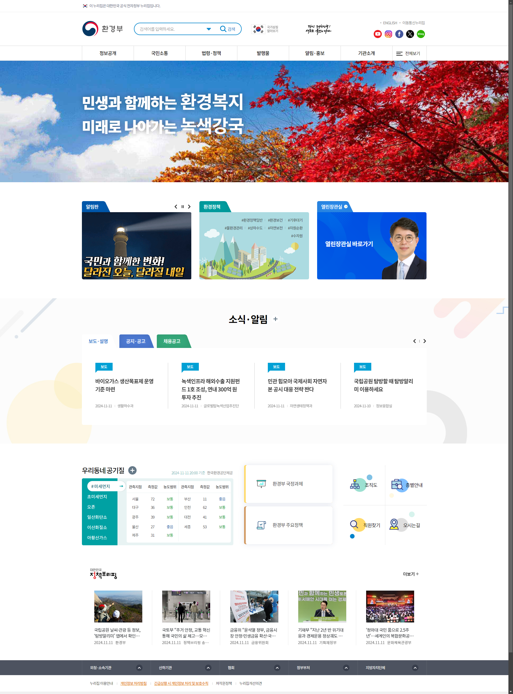

웹사이트 분석 결과
측정한 웹사이트: {{url}}
해당 웹페이지는 탄소 배출 {{grade}} 등급입니다.
전 세계 평균보다 {{global_avg_diff}}MB 더 배출
대한민국 평균보다 {{korea_avg_diff|abs}}MB {% if korea_avg_diff > 0 %}더{% else %}덜{% endif %} 배출
메인페이지 용량: {{(kb_weight/1024)|round(2)}}MB
탄소 배출량: {{carbon_emission}}g
마지막 측정일: 2024-10-11 다시 측정하기
연간 탄소 배출량 환산
월 10,000명 방문 기준 ({{carbon_emission / 1000 * 10000 * 12}} CO₂/kg)
커피 끓이는 잔의 수
{{(carbon_emission /1000 * 10000 * 12 / 0.01)|round}}잔
커피 1잔 = 0.01g CO₂
전기차 주행거리
{{(carbon_emission/1000 * 10000 * 12 / 0.16 * 2)|round}}km
2km 주행 = 0.16kg CO₂
스마트폰 충전
{{(carbon_emission/1000 * 10000 * 12 / 0.02 * 3)|round}}회
3회 충전 = 0.02g CO₂
나무 흡수량
{{(carbon_emission/1000 * 10000 * 12 / 0.02)|round}}그루
1그루 = 0.02kg CO₂/년
리소스 타입별 용량 분포
전체 정부/공기관 탄소 배출량 분포
현재 측정된 웹사이트 트래픽 분포 (약 7300개,kde)
기관별 웹사이트 전송 크기 분포
실시간 탄소배출량 추이 (google analytics API 입력 필요)
W3c 지속가능한 웹개발 가이드라인 준수 현황 (llama3.2 RAG 모델 사용)
| 번호 | 항목 | 준수여부 |
|---|
최적화 가능 항목
Google Lighthouse 상세 분석 결과
| 분석 항목 | 용량 | 상세 내용 |
|---|---|---|
| 총 리소스 용량 | {{ (view_data.total_byte_weight / 1024 / 1024)|round(2) }}MB | 전체 페이지 리소스 크기 |
| 서드파티 스크립트 제거 | {{ (view_data.third_party_summary_wasted_bytes / 1024 / 1024)|round(2) }}MB | 외부 스크립트로 인한 낭비 용량 |
| JavaScript 분석 |
미사용: {{ (view_data.total_unused_bytes_script / 1024 / 1024)|round(2) }}MB 전체: {{ (view_data.total_resource_bytes_script / 1024 / 1024)|round(2) }}MB |
전체 JavaScript 중 미사용 코드 비율: {{ ((view_data.total_unused_bytes_script / view_data.total_resource_bytes_script) * 100)|round(1) }}% |
| 미사용 CSS | {{ (view_data.can_optimize_css_bytes / 1024)|round(2) }}KB | 사용되지 않는 CSS 규칙 제거로 최적화 가능 |
| 미사용 JavaScript | {{ (view_data.can_optimize_js_bytes / 1024)|round(2) }}KB | 지연 로딩 및 미사용 코드 제거로 최적화 가능 |
| 이미지 최적화 가능 | {{ (view_data.modern_image_formats_bytes / 1024)|round(2) }}KB | WebP/AVIF 포맷 변환으로 절감 가능 |
| 애니메이션 최적화 | {{ (view_data.efficient_animated_content / 1024)|round(2) }}KB | GIF를 MP4/WebM으로 변환하여 절감 가능 |
| 중복 JavaScript | {{ (view_data.duplicated_javascript / 1024)|round(2) }}KB | 중복된 JavaScript 모듈 제거로 최적화 가능 |
최적화 전/후 비교
Before
총 리소스: {{(view_data.total_byte_weight/1024/1024)|round(2)}}MB
After
절감 후 리소스: {{((view_data.total_byte_weight - total_optimization)/1024/1024)|round(2)}}MB
{{(total_optimization/1024/1024)|round(2)}}MB은 월 1만회의 방문자일 때,
연간 탄소 배출량 환산
월 10,000명 방문 기준 ({{ optimization_carbon/1000 * 10000 * 12|round}} CO₂/kg)
커피 끓이는 잔의 수
{{( optimization_carbon/1000 * 10000 * 12 / 0.01)|round}}잔
커피 1잔 = 0.01g CO₂
전기차 주행거리
{{( optimization_carbon/1000 * 10000 * 12 / 0.16 * 2)|round}}km
2km 주행 = 0.16kg CO₂
스마트폰 충전
{{( optimization_carbon/1000 * 10000 * 12 / 0.02 * 3)|round}}회
3회 충전 = 0.02g CO₂
나무 흡수량
{{( optimization_carbon/1000 * 10000 * 12 / 0.02)|round}}그루
1그루 = 0.02kg CO₂/년
탄소 배출 증명 배지
배지는 웹사이트 헤더나 푸터에 추가하여 각 페이지의 탄소 배출량을 자동으로 계산하고 표시할 수 있습니다.
오픈 소스 API